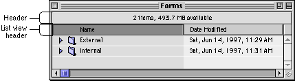

Window Headers
The window header is designed to be a simple way to present information about a window's contents. It is a familiar feature of the Finder, but it can also be implemented in document windows.The window header is a beveled rectangle whose outside lines share the same space as the inside lines of the document window and the scroll bar arrows. There is a also a window list view header, which provides the same functionality as the standard window header, but removes the line which separates a standard window header from the content area. Figure 2-43 shows an example of a window header and a window list view header.
Figure 2-43 A Finder window using headers
